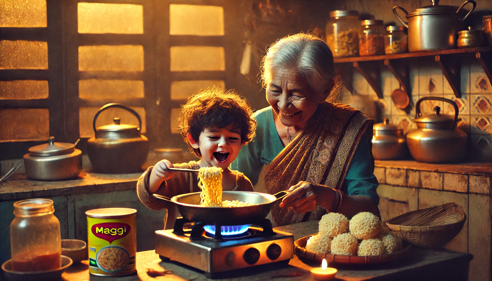
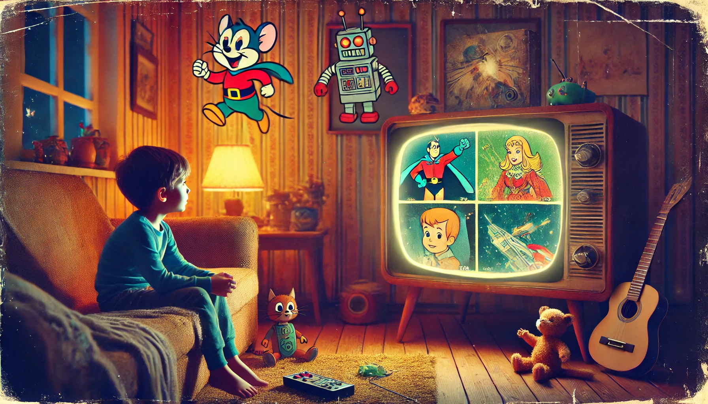

Childhood is a time of joy, laughter, and endless play. Some of my fondest memories come from the games I
used to play as a child. Whether indoors or outdoors, these games brought excitement, creativity, and
friendships that I still cherish today.
From running around playing hide and seek to the thrill of
lagori (seven stones), every game had its own special charm. Board games like Ludo and Snakes & Ladders made
rainy days fun, while video games introduced me to a whole new world of adventure. These games not only
entertained me but also taught valuable lessons in teamwork, patience, and strategy.
Even today,
thinking about those games brings a sense of nostalgia and happiness. They remind me of simpler times when
winning or losing didn’t matter as much as having fun with friends.
My Favourite Food

Childhood is filled with fond memories, and for me, one of the most cherished ones revolves around my
favorite food—[your favorite dish, e.g., "Aloo Paratha" or "Maggi Noodles"]. The aroma, taste, and
the love with which it was prepared made it extra special.
I remember eagerly waiting for my mother or grandmother to cook it, watching as they carefully prepared each
ingredient. The rich flavors, the warmth, and the joy of having it after a long day of playing made it the
ultimate comfort food. Every bite was a mix of nostalgia and happiness.
Even today, whenever I eat [your favorite dish], it takes me back to those carefree days of childhood. It’s
not just about the taste but the emotions and memories attached to it that make it my all-time favorite
childhood food.
My Favourite Cartoons

Childhood memories are incomplete without the joy of watching cartoons. They were not just a source of
entertainment but also a world of imagination, fun, and valuable life lessons. Some cartoons made me laugh
endlessly, while others inspired me with their adventurous stories and lovable characters.
One of my all-time favorites was Tom and Jerry, the classic cat-and-mouse chase that never failed to
amuse
me. The hilarious antics and clever tricks of Jerry always kept me hooked. Another favorite was
Doraemon,
the robotic cat from the future, whose magical gadgets made every episode exciting. Nobita’s misadventures
and Doraemon’s solutions were a perfect mix of fun and emotion.
Ben 10 was another cartoon that fascinated me with its unique concept. Watching Ben transform into
different
aliens using the Omnitrix was thrilling, and it sparked my imagination about having superpowers. Similarly,
Pokemon introduced me to the world of adventure, friendship, and battles, making me dream of becoming
a
Pokémon trainer.
Apart from these, shows like Shinchan and Chhota Bheem added more fun to my childhood.
Shinchan’s
mischievous nature and witty dialogues always made me laugh, while Chhota Bheem’s strength and heroism
taught me about courage and kindness.
These cartoons were more than just shows; they were a part of my daily routine and created countless happy
moments. Even today, revisiting them fills me with nostalgia and reminds me of the carefree days of
childhood.
My Favourite Places
Childhood is a time of innocence, joy, and unforgettable memories. Some of my fondest moments are tied to the
places that shaped my early years—places that filled my heart with excitement and wonder.
One such place was Nana Nani Park, where I spent countless hours running, playing, and making
friends. The
swings, slides, and open fields were my little world of adventure. Another special spot was Mama's
Home,
where I felt warmth, love, and endless stories.
I also cherished visiting a school, where I learned, explored, and built the
foundation of who I am today. These places weren’t just locations; they were the backdrop of my childhood,
filled with laughter, imagination, and dreams.
My Favourite Activities
Childhood is a time filled with fun, imagination, and unforgettable memories. Looking back, some of my
favorite activities brought me immense joy and excitement.
One of my favorite pastimes was playing outdoor games with my friends. Whether it was cricket, hide and
seek, or cycling around the neighborhood, I loved the thrill of running freely and competing in friendly
matches. These moments not only kept me active but also strengthened my friendships.
Another activity I enjoyed was watching cartoons and animated movies. Shows like Doraemon, Tom & Jerry,
and Chhota Bheem would keep me entertained for hours, sparking my creativity and imagination. I
often tried to imitate my favorite characters or recreate their adventures in my own way.
Reading storybooks was also a cherished activity. I loved diving into different worlds through books filled
with Panchatantra tales, Akbar-Birbal stories, and adventure books. These stories fueled my curiosity
and helped me develop a love for learning.
Additionally, I loved spending time with my family, whether it was playing Ludo, Carrom, or Chess,
listening to bedtime stories from my parents, or helping in the kitchen. These moments created a strong bond
and left me with wonderful memories.
Overall, my childhood was filled with simple yet meaningful activities that shaped who I am today. Even now,
I look back at those days with a smile, cherishing the joy and innocence of childhood.